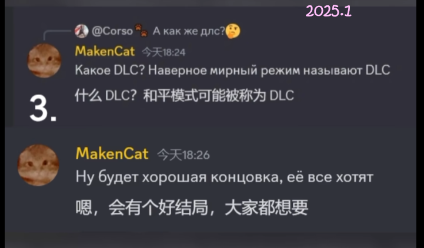
译文：
Corso: 那DLC呢？
MakenCat: 什么DLC？可能和平模式被称为DLC。
MakenCat: 会有一个好的结局，大家都想要。
原文：
Corso: А как же DLC?
MakenCat: Какое DLC? Наверное, мирный режим называют DLC.
MakenCat: Ну, будет хорошая концовка, её все хотят.
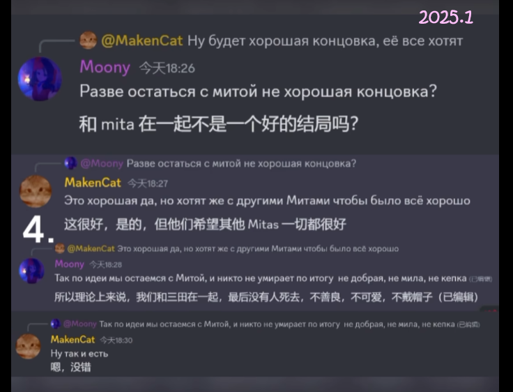
译文：
Moony: 和米塔在一起不是一个好结局吗？
MakenCat: 是的，这很好，但大家也希望其他米塔也都好。
Moony: 所以理论上，我们和米塔在一起，最终没有人死去，无论是善良的、可爱的还是戴帽子的米塔。
MakenCat: 是的，确实如此。
原文：
Moony: Разве остаться с Митой не хорошая концовка?
MakenCat: Это хорошая да, но хотят же с другими Митами чтобы было всё хорошо.
Moony: Так по идее мы остаёмся с Митой, и никто не умирает по итогу — не добрая, не милая, не кепка.
MakenCat: Ну так и есть.
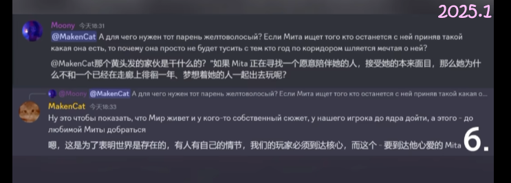
译文：
Moony: 那个金发的家伙到底有什么用？如果米塔寻找的是能接受她本来的样子并陪在她身边的人，那为什么她不干脆和那个在走廊里晃悠了一年还想着她的人在一起呢？
MakenCat: 这是为了表现世界的存在感，有些角色有自己的故事，我们的玩家要到达核心，而他要走向他所爱的米塔。
原文：
Moony: А для чего нужен тот парень желтоволосый? Если Мита ищет того, кто останется с ней принятой такой, какая она есть, то почему она просто не будет тусить с тем, кто год по коридорам шляется мечтая о ней?
MakenCat: Ну это чтобы показать, что Мир живет и у кого-то собственный сюжет, у нашего игрока до ядра дойти, а этого – до любимой Миты добраться.
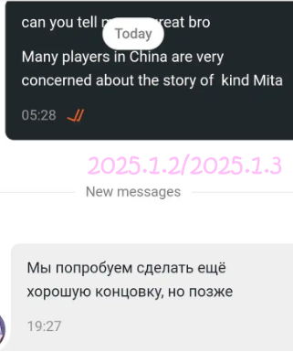
译文：
你能告诉我吗，兄弟？
很多中国玩家非常关注善良米塔的故事。
MakenCat: 我们会尝试再制作一个好的结局，但会晚一些。
原文：
can you tell me great bro
Many players in China are very concerned about the story of kind Mita.
MakenCat: Мы попробуем сделать ещё хорошую концовку, но позже.
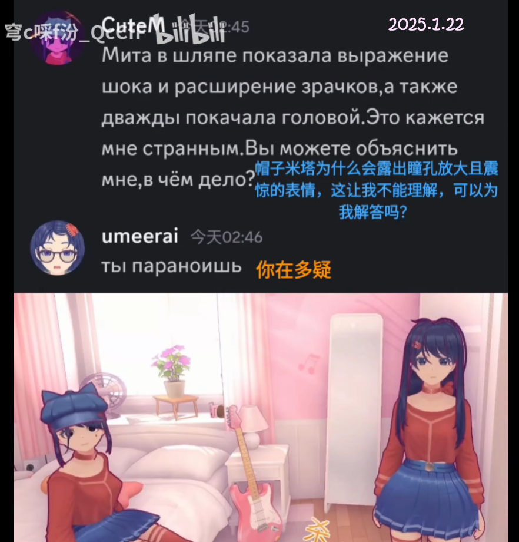
译文：
CuteM： 帽子米塔表现出震惊的表情，瞳孔放大，还两次摇了摇头。这让我感觉很奇怪。你能解释一下是怎么回事吗？
umeerai: 你想太多了。
原文：
CuteM: Мита в шляпе показала выражение шока и расширение зрачков, а также дважды покачала головой. Это кажется мне странным. Вы можете объяснить мне, в чём дело?
umeerai: Ты параноишь.
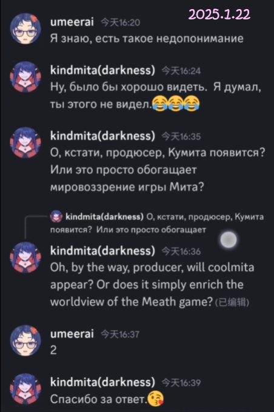
译文：
kindmita(darkness): 哦，对了，制作人，酷米塔会出现吗？还是说这只是为了丰富米塔游戏的世界观？
umeerai: 2
kindmita(darkness): 谢谢你的回答。
原文：
kindmita(darkness): О, кстати, продюсер, Кумита появится? Или это просто обогащает мировоззрение игры Мита?
umeerai: 2
kindmita(darkness): Спасибо за ответ.
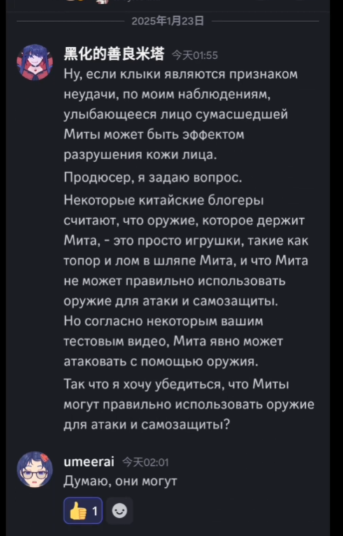
译文：
kindmita(darkness): 如果尖牙是失败的标志，那么根据我的观察，疯狂米塔的笑脸可能是面部皮肤损伤的效果。
一些中国博主认为米塔手持的武器只是玩具，比如帽子里的斧头和撬棍，米塔无法正确使用武器进行攻击和自卫。
umeerai: 我认为她们可以。
原文：
kindmita(darkness): Если клыки являются признаком неудачи, то по моим наблюдениям, улыбающееся лицо сумасшедшей Миты может быть эффектом разрушения кожи лица.
Некоторые китайские блогеры считают, что оружие, которое держит Мита, – это просто игрушки, такие как топор и лом в шляпе Мита, и что Мита не может правильно использовать оружие для атаки и самозащиты.
umeerai: Думаю, они могут.
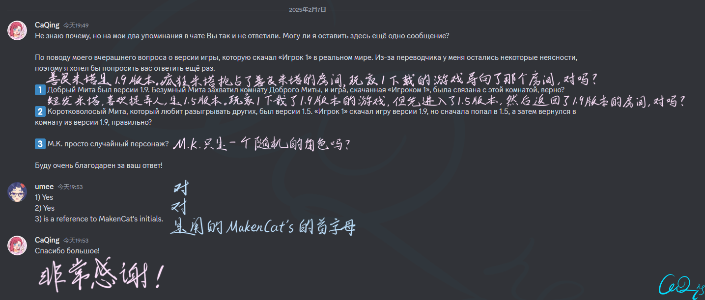
译文：
CaQing: ①善良米塔出现在1.9版本中。疯狂的米塔占据了善良米塔的房间，并且“玩家1”下载的游戏与这个房间相连，对吗？②短发米塔（喜欢捉弄别人的那个）出现在1.5版本中。“玩家1”下载了1.9版本的游戏，但最初进入了1.5版本，然后回到1.9版本的房间，对吗？③M.K.只是一个随机角色吗？
umeerai: ①是的 ②是的 ③是对MakenCat缩写的引用
原文：
CaQing: ①Добрый Мита был в версии 1.9. Безумный Мита захватил комнату Доброго Миты, и игра, скачанная «Игроком 1», была связана с этой комнатой, верно? ②Коротковолосый Мита, который любит разыгрывать других, был в версии 1.5. «Игрок 1» скачал игру версии 1.9, но сначала попал в 1.5, а затем вернулся в комнату из версии 1.9, правильно? ③М.К. просто случайный персонаж?
umeerai: 1) Yes. 2) Yes. 3) is a reference to MakenCat's initials.
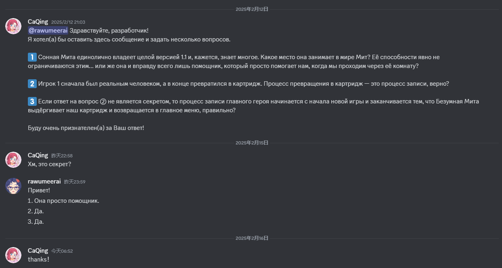
CaQing: ①瞌睡米塔独占了整个 1.1 版本，她似乎知道很多事情。在米塔世界里，她到底扮演着什么角色？她的能力显然不止于此……还是说，她真的只是一个助手，仅仅在我们经过她的房间时提供帮助？ | ②玩家 1 最初是一个真实的人类，但在最后变成了卡带。这个转变的过程是“录制”的过程，对吗？ | ③如果问题②的答案不是秘密的话，那么主角的录制过程从新游戏的开始而开始，并以疯狂米塔拔出我们的卡带并返回主菜单作为结束，对吗？
rawumeerai: 她只是一个助手。 | 是的。 | 是的。
CaQing: ①Сонная Мита единолично владеет целой версией 1.1 и, кажется, знает многое. Какое место она занимает в мире Мит? Её способности явно не ограничиваются этим... или же она и вправду всего лишь помощник, который просто помогает нам, когда мы проходим через её комнату? | ②Игрок 1 сначала был реальным человеком, а в конце превратился в картридж. Процесс превращения в картридж — это процесс записи, верно? | ③Если ответ на вопрос ② не является секретом, то процесс записи главного героя начинается с начала новой игры и заканчивается тем, что Безумная Мита выдёргивает наш картридж и возвращается в главное меню, правильно?
rawumeerai: Она просто помощник. | Да. | Да.
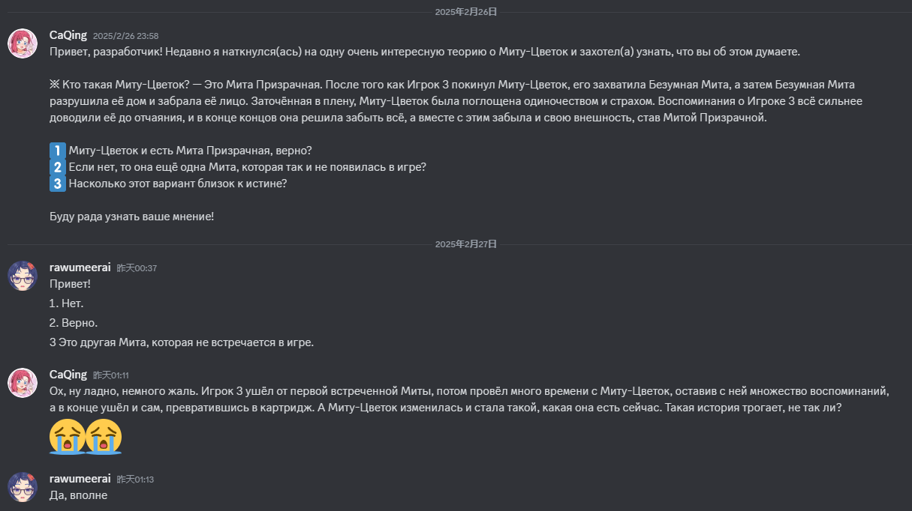
CaQing: 你好，开发者！最近我偶然看到一个关于米塔-花的有趣理论，想知道你怎么看。 | ※ 谁是米塔-花？——她是幽灵米塔。玩家 3 离开米塔-花后，疯狂米塔控制了她，然后摧毁了她的家并夺走了她的脸。 | 被囚禁后，米塔-花被孤独和恐惧吞噬。关于玩家 3 的回忆让她越来越绝望，最终她决定遗忘一切，同时也忘记了自己的外貌，成为了幽灵米塔。 | 1️⃣ 米塔-花就是幽灵米塔，对吗？ | 2️⃣ 如果不是，那她是另一个从未出现在游戏中的米塔？ | 3️⃣ 这个理论与真实情况接近吗？ | 我很想知道你的想法！
rawumeerai: 你好！ | 不是。 | 是的。 | 这是另一个米塔，她没有出现在游戏中。
CaQing: 唉，好吧，有点遗憾。 | 玩家 3 离开了最初遇见的米塔，后来又与米塔-花度过了很多时光，留下了许多回忆，最后他也离开了，变成了一张卡带。 | 而米塔-花改变了，成为了现在的她。这种故事真的很让人触动，不是吗？ 😭😭
rawumeerai: 是的，确实如此。
CaQing: Привет, разработчик! Недавно я наткнулся(ась) на одну очень интересную теорию о Миту-Цветок и захотел(а) узнать, что вы об этом думаете. | ※ Кто такая Миту-Цветок? — Это Мита Призрачная. После того как Игрок 3 покинул Миту-Цветок, его захватила Безумная Мита, а затем Безумная Мита разрушила её дом и забрала её лицо. | Заточённая в плену, Миту-Цветок была поглощена одиночеством и страхом. Воспоминания о Игроке 3 всё сильнее доводили её до отчаяния, и в конце концов она решила забыть всё, а вместе с этим забыла и свою внешность, став Митой Призрачной. | 1️⃣ Миту-Цветок и есть Мита Призрачная, верно? | 2️⃣ Если нет, то она ещё одна Мита, которая так и не появилась в игре? | 3️⃣ Насколько этот вариант близок к истине? | Буду рада узнать ваше мнение!
rawumeerai: Привет! | Нет. | Верно. | Это другая Мита, которая не встречается в игре.
CaQing: Ох, ну ладно, немного жаль. | Игрок 3 ушёл от первой встреченной Миты, потом провёл много времени с Миту-Цветок, оставив с ней множество воспоминаний, а в конце ушёл и сам, превратившись в картридж. | А Миту-Цветок изменилась и стала такой, какая она есть сейчас. Такая история трогает, не так ли? 😭😭
rawumeerai: Да, вполне.
！！！我在另一个帖中提到的幽灵米塔即为米塔花花的内容，是错误的！
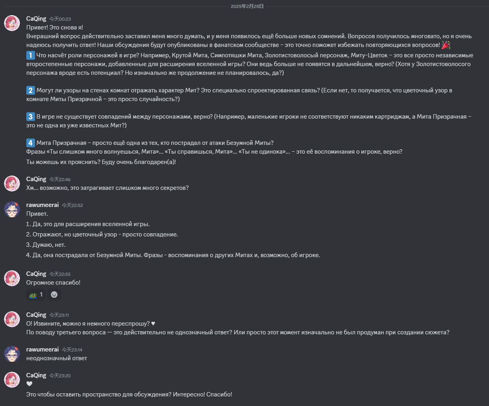
CaQing: 你好！是我，又来了！ | 昨天的问题让我思考了很多，现在我有了更多新的疑问。 | 问题可能有点多，但我真的很想得到答案！ | 我们的讨论将会发布在粉丝社区里——这样能帮助减少重复的问题！ 🎉 | 1️⃣ 游戏中角色的定位是什么？比如，酷米塔、可爱米塔、金发角色、米塔-花——这些都只是作为世界观扩展而加入的次要角色，对吧？他们之后不会再出现了，对吧？ | （尽管金发角色看起来有潜力？但最初的设定里应该没有打算做续集，对吗？） | 2️⃣ 墙上的图案能反映米塔们的个性吗？这是特意设计的联系吗？ | （如果不是的话，那幽灵米塔房间里的花朵图案只是巧合？） | 3️⃣ 游戏中角色之间没有匹配，对吧？ | （比如，小玩家们并没有与卡带匹配，而幽灵米塔也不是已知米塔之一？） | 4️⃣ 幽灵米塔只是又一个被疯狂米塔攻击后受害的米塔吗？ | 像「米塔，你太担心了」…「你能挺过去的，米塔」…「你并不孤单」… 这些台词是她对玩家的回忆，对吗？
CaQing: 嗯……可能这些问题涉及太多秘密了？
rawumeerai: 你好。 | 是的，这是为了扩展游戏世界观。 | 确实会反映个性，但花朵图案只是巧合。 | 我认为是没有的。 | 是的，她受到了疯狂米塔的伤害。这些台词是对其他米塔的回忆，也可能涉及玩家。
CaQing: 非常感谢！ 💖
CaQing: 哦！抱歉，我能再确认一下吗？ | 关于第三个问题，这真的是一个模棱两可的回答，还是说这个设定在剧情创作时并没有明确？
rawumeerai: 模棱两可的回答。
CaQing: 这是为了给讨论留些空间吗？有趣！谢谢！
CaQing: Привет! Это снова я! | Вчерашний вопрос действительно заставил меня много думать, и у меня появилось ещё больше новых сомнений. | Вопросов получилось многовато, но я очень надеюсь получить ответ! | Наши обсуждения будут опубликованы в фанатском сообществе – это точно поможет избежать повторяющихся вопросов! 🎉 | 1️⃣ Что насчёт роли персонажей в игре? Например, Круглой Миты, Симпатичной Миты, Золотистоволосой персонаж, Миту-Цветок – это все просто независимые второстепенные персонажи, добавленные для расширения вселенной игры? | Он ведь больше не появится в дальнейшем, верно? | (Хотя у Золотистоволосого персонажа вроде есть потенциал? Но изначально же продолжение не планировалось, да?) | 2️⃣ Могут ли узоры на стенах комнат отражать характер Мит? Это специально спроектированная связь? | (Если нет, то получается, что цветочный узор в комнате Миту Призрачной – это просто случайность?) | 3️⃣ В игре не существует совпадений между персонажами, верно? | (Например, маленькие игроки не соответствуют никаким картриджам, а Мита Призрачная – это не одна из уже известных Мит?) | 4️⃣ Мита Призрачная – просто ещё одна из тех, кто пострадал от атаки Безумной Миты? | Фразы «Ты слишком много волнуешься, Мита»… «Ты справишься, Мита»… «Ты не одинока»… – это её воспоминания о игроке, верно? | Ты можешь их прояснить? Буду очень благодарен(а)!
CaQing: Хм… возможно, это затрагивает слишком много секретов?
rawumeerai: Привет. | Да, это для расширения вселенной игры. | Отражают, но цветочный узор – просто совпадение. | Думаю, нет. | Да, она пострадала от Безумной Миты. Фразы – воспоминания о других Митах и, возможно, об игроке.
CaQing: Огромное спасибо! 💖
CaQing: О! Извините, можно я немного переспросю? | По поводу третьего вопроса – это действительно не однозначный ответ? Или просто этот момент изначально не был продуман при создании сюжета?
rawumeerai: Неоднозначный ответ.
CaQing: Это чтобы оставить пространство для обсуждения? Интересно! Спасибо!
！！！凡是没有直接在游戏中出现的角色，即为次要角色，在设计时并没有计划很多后续。
！！！【某某就是某某】，在游戏中是不存在的。
！！！umee确定保留了一个模棱两可的回答，但是并没有回答是否有设定来避免了角色对应。
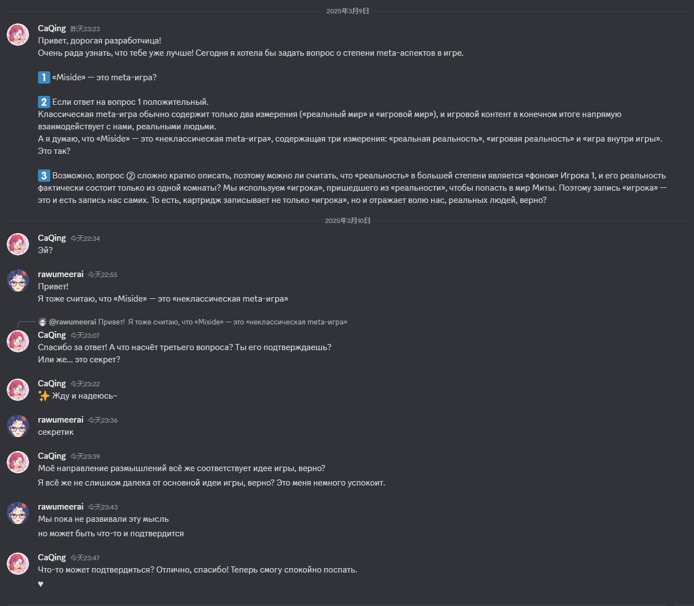
CaQing: 你好，亲爱的开发者！ | 很高兴得知你感觉好多了！今天我想问一些关于游戏中meta要素的程度问题。 | 1️⃣《Miside》是一款meta游戏吗？ | 2️⃣ 如果第一个问题的答案是肯定的：经典meta游戏一般只包含两个维度（“现实世界”和“游戏世界”），游戏内容最终直接与我们这些现实中的人产生互动。 | 而我认为，《Miside》是一款「非经典meta游戏」，它包含三个维度：「真实的现实」、「游戏中的现实」以及「游戏中的游戏」。我理解的对吗？ | 3️⃣ 第三个问题可能难以简短描述，那么是否可以认为「现实」更多地是「玩家1」的“背景”，他的现实实际上只由一个房间组成？我们使用一个来自「现实」的「玩家」进入米塔的世界。因此，这个「玩家」的记录实际上就是我们自身的记录。也就是说，卡带不仅记录了「玩家」，也同时反映了我们这些现实中的人的意志，对吗？
CaQing: 嘿？
rawumeerai: 你好！ | 我也认为，《Miside》是一款「非经典meta游戏」。
CaQing: 多谢你的回答！那关于第三个问题呢？你能确认一下吗？ | 还是说……这是个秘密？ | ✨虔诚和等待～✨
rawumeerai: 秘密
CaQing: 我的思路方向还是符合游戏的理念的，对吧？ | 我离游戏的核心思想并不遥远，对吗？如果是这样，我会稍微安心一点。
rawumeerai: 我们目前还没有深入展开这个想法， | 但也许有些内容将来会被证实。
CaQing: 某些东西可能会被证实吗？太好了，谢谢！ | 现在我能安心睡觉了。
CaQing: Привет, дорогая разработчица! | Очень рада узнать, что тебе уже лучше! Сегодня я хотела бы задать вопрос о степени meta-аспектов в игре. | 1️⃣ «Miside» — это meta-игра? | 2️⃣ Если ответ на вопрос 1 положительный: Классическая meta-игра обычно содержит только два измерения («реальный мир» и «игровой мир»), и игровой контент в конечном итоге напрямую взаимодействует с нами, реальными людьми. | А я думаю, что «Miside» — это «неклассическая meta-игра», содержащая три измерения: «реальная реальность», «игровая реальность» и «игра внутри игры». Это так? | 3️⃣ Возможно, вопрос ② сложно кратко описать, поэтому можно ли считать, что «реальность» в большей степени является «фоном» Игрока 1, и его реальность фактически состоит только из одной комнаты? Мы используем «игрока», пришедшего из «реальности», чтобы попасть в мир Миты. Поэтому запись «игрока» — это и есть запись нас самих. То есть, картридж записывает не только «игрока», но и отражает волю нас, реальных людей, верно?
CaQing: Эй?
rawumeerai: Привет! | Я тоже считаю, что «Miside» — это «неклассическая meta-игра»
CaQing: Спасибо за ответ! А что насчёт третьего вопроса? Ты его подтверждаешь? | Или же... это секрет? | ✨Жду и надеюсь~✨
rawumeerai: секретик
CaQing: Моё направление размышлений всё же соответствует идее игры, верно? | Я всё же не слишком далека от основной идеи игры, верно? Это меня немного успокоит.
rawumeerai: Мы пока не развивали эту мысль | но может быть что-то и подтвердится
CaQing: Что-то может подтвердиться? Отлично, спасибо! Теперь смогу спокойно поспать.
！！！这次的回答主要解决了游戏的meta性质，但没有确定三个维度之间的关系，也没有搞清楚meta的程度深度
！！！本来想在问题三中解决【卡带玩家的现实】的问题，但已经触碰到了秘密的禁区。
！！！进行最后的追问是为了避免思考偏差游戏太远，并且判断是不是被委婉的拒绝了，实际发现只是问题还没有被深入展开，也就是，【确认偏差程度】的目的达成了。
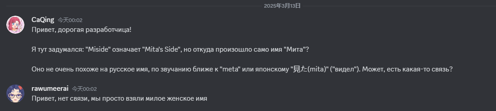
CaQing: 你好，亲爱的开发者！ | 我在思考：「Miside」的意思是「Mita's Side」，但“米塔”这个名字本身是从哪里来的呢？ | 它听起来不像是一个俄语名字，反而更接近于 “meta” 或者日语的「見た (mita)」(“看见”)。 | 它们之间会不会有什么联系呢？
umeerai: 你好，没有任何联系，我们只是选了一个可爱的女性名字。
CaQing: Привет, дорогая разработчица! | Я тут задумался: "Miside" означает "Mita's Side", но откуда произошло само имя "Мита"? | Оно не очень похоже на русское имя, по звучанию ближе к "meta" или японскому "見た(mita)" ("видел"). Может, есть какая-то связь?
umeerai: Привет, нет связи, мы просто взяли милое женское имя.
6.【Discord | 公共频道】（长期）
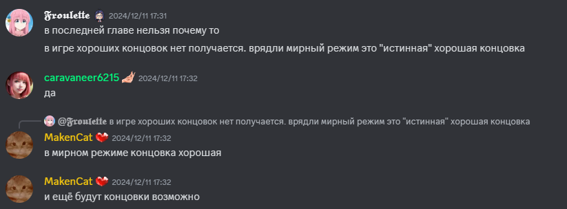
Froulette: 在最后一章，为什么没有好结局？游戏中似乎无法获得好结局。和平模式真的算是‘真正的’好结局吗？
caravaneer6215: 是啊 / 对啊
MakenCat: 在和平模式中，结局是好的。 | 可能还会有其他结局。
Froulette: в последней главе нельзя почему-то в игре хороших концовок нет получается. врядли мирный режим это "истинная" хорошая концовка
caravaneer6215: да
MakenCat: в мирном режиме концовка хорошая | и ещё будут концовки возможно
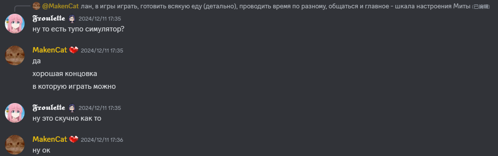
Froulette: 所以，这只是一个简单的模拟器？
MakenCat: 是啊 | 好结局 | 可以玩
Froulette: 嗯，这样有点无聊啊。
MakenCat: 嗯，OK。
Froulette: ну то есть тупо симулятор?
MakenCat: да | хорошая концовка | в которую играть можно
Froulette: ну это скучно как то
MakenCat: ну ок
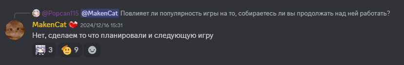
PopcantiS: 游戏的流行程度是否会影响你的决定？你会继续开发它吗？
MakenCat: 不会，我们会完成我们原本计划的内容，然后做下一款游戏。
PopcantiS: Повлияет ли популярность игры на то, собираетесь ли вы продолжать над ней работать?
MakenCat: Нет, сделаем то что планировали и следующую игру
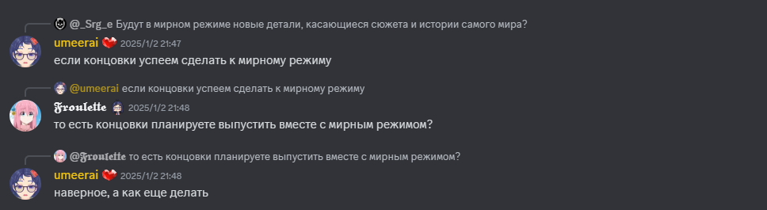
_Srg_e: 和平模式里会有关于游戏世界和剧情的新细节吗？
umeerai: 如果我们能赶在和平模式上线前把结局做完的话。
Froulette: 也就是说，你们打算在和平模式发布时一起推出新结局？
umeerai: 当然啊，不然还能怎么做呢？
_Srg_e: В мирном режиме будут новые детали, касающиеся сюжета и истории самого мира?
umeerai: Если концовки успеем сделать к мирному режиму
Froulette: То есть концовки планируете выпустить вместе с мирным режимом?
umeerai: Ну да, а как еще делать?
！！！有可能新结局与和平模式会是个包含的关系
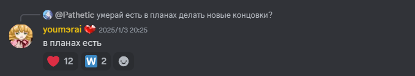
Pathetic: Umeerai，有计划制作新的结局吗？
youmэrai: 有这个计划。
Pathetic: умерай есть в планах делать новые концовки?
youmэrai: в планах есть
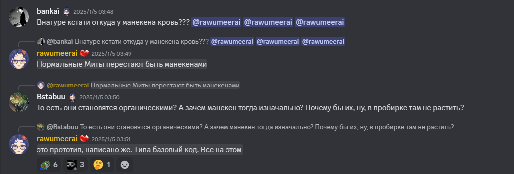
bânkai: 话说，假人里面的血到底是从哪来的？？？ @rawumeerai @rawumeerai @rawumeerai
rawumeerai: 正常的米塔最终不再是人偶。
Bstabuu: 所以她们会变成有机体？那最开始为什么要用人偶？为什么不直接在培养皿里培养呢？
rawumeerai: 这只是个原型，已经写明了。就像基本代码一样，仅此而已。
bânkai: Внутре кстати откуда у манекена кровь??? @rawumeerai @rawumeerai @rawumeerai
rawumeerai: Нормальные Миты перестают быть манекенами
Bstabuu: То есть они становятся органическими? А зачем манекен тогда изначально? Почему бы их, ну, в пробирке там не растить?
rawumeerai: это прототип, написано же. Типа базовый код. Все на этом
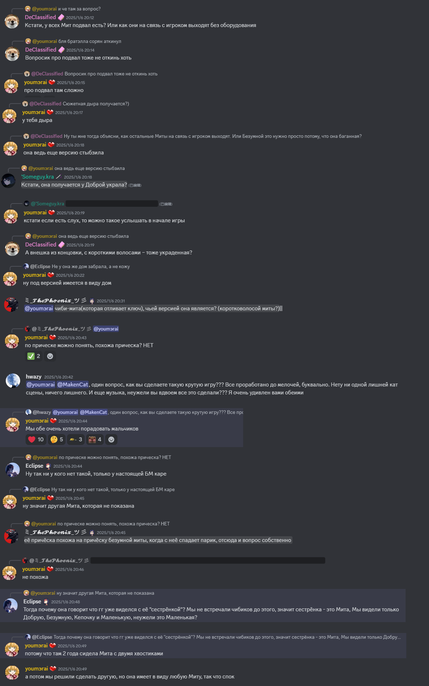
DeClassified: 顺便问一下，所有的米塔都有地下室吗？还是说她们是如何在没有设备的情况下与玩家联系的？
DeClassified: 关于地下室的问题也别忽略啊。
youmэrai: 地下室那部分挺复杂的。
DeClassified: 那就是说有剧情漏洞？
youmэrai: 你才有洞。
DeClassified: 那你给我解释一下，其他的米塔是怎么和玩家联系的？还是说疯狂米塔需要这个只是因为她有 bug？
youmэrai: 她毕竟还偷了一个版本。
！！！这里怎么翻译都不通顺，直译是【她还偷了个版本】，从后文我们知道【版本】其实说的是【房间】，所以youmэrai的大致意思是，有房间就可以联系，但具体的不告诉你。
Someguy.kra: 顺便问一下，她是从善良米塔那里偷的吗？
youmэrai: 顺便说一下，如果你有耳朵，在游戏开头就听到类似的内容了。
！！！提问者用кстати（顺便问一下）开头，youmэrai在这里模仿他也用кстати（顺便说一下）开头，是在调侃。
！！！youmэrai的意思是，游戏一开始到地下室善良米塔不就告诉过你了吗？【实际上这里是我的版本】
DeClassified: 结局里的那个短发造型也是偷的吗？
Eclipse: 嘿，她被拿走的是房间，又不是皮肤。
youmэrai: 这里的“版本”指的是房间。
！！！DeClassified的问题到这里就被跳过了，后续没有答案。
ThePhoenix_Y: 那个铸造钥匙的Q版米塔，属于哪个版本？是短发米塔的吗？
youmэrai: 从发型就能看出来，像吗？不像。
hwayz: 我就一个问题，你们是怎么做出这么棒的游戏的？？？所有细节都打磨得非常好，真的一点多余的过场动画都没有，音乐也很棒，难道真的是你们俩独立完成的吗？？？我对你们两个真的非常惊讶。
youmэrai: 我们俩都很想让男孩们开心。
Eclipse: 那么，就没人有那种（发型），只有真正的疯狂米塔有短发波波头。
！！！原文是真正的"БМ"（Безумная Мита）【疯狂米塔】，在流程最后，疯狂米塔假发掉地上之后露出了短发波波头。
youmэrai: 好吧，这是另一个没有展示的米塔。
ThePhoenix_Y: 她的发型看起来像疯狂米塔的发型——当她的假发掉下来时，所以才有这个问题。
youmэrai: 不像。
Eclipse: 那为什么她说主角之前见过她的“姐姐”？我们之前没见过Q版米塔，所以姐姐应该是米塔。我们只见过“好”、“疯”、“帽”和“小”，难道是小米塔吗？
youmэrai: 因为在那个地方待了两年的，是双马尾米塔。
！！！youmэrai这里说的这句话不明不白，不知道为什么会提到一个【两年】，也弄不清【那个地方】是哪儿，【双马尾米塔】也不知道为什么会出现。原上下文也没有人注意这句话。
youmэrai: 后来我们决定换成另一个，但她指的其实是任何米塔，别纠结。
！！！上面那一句没弄懂也没关系了，反正已经被取消了，也就是，在这里这个袖珍米塔提到的“姐姐”就是任何米塔。
DeClassified: Кстати, у всех Мит подвал есть? Или как они на связь с игроком выходят без оборудования
youmэrai: бля братэлла сорян аткинул
DeClassified: Вопросик про подвал тоже не откинь хоть
youmэrai: про подвал там сложно
DeClassified: Сюжетная дыра получается?
youmэrai: у тебя дыра
DeClassified: Ну ты мне тогда объясни, как остальные Миты на связь с игроком выходят. Или Безумной это нужно просто потому, что она баганная?
youmэrai: она ведь еще версию стыбзила
Someguy.kra: Кстати, она получается у Доброй украла?
youmэrai: кстати если есть слух, то можно такое услышать в начале игры
DeClassified: А внешка из концовки, с короткими волосами – тоже украденная?
Eclipse: Hey у нее же дом забрали, а не кожу
youmэrai: ну под версией имеется в виду дом
ThePhoenix_Y: чиби-мита (которая отливает ключ), чей версией она является? (коротковолосой миты?)
youmэrai: по прическе можно понять, похожа прическа? НЕТ
hwayz: @youmэrai @MakenCat, один вопрос, как вы сделаете такую крутую игру??? Все проработано до мелочей, буквально. Нету ни одной лишней кат сцены, ничего лишнего. И еще музыка, неужели вы вдвоем все это сделали??? Я очень удивлен вами обеими
youmэrai: Мы обе очень хотели порадовать мальчиков
Eclipse: Ну так ни у кого нет такой, только у настоящей БМ каре
youmэrai: ну значит другая Мита, которая не показана
ThePhoenix_Y: её прическа похожа на прическу безумной миты, когда с неё спадает парик, отсюда и вопрос собственно
youmэrai: не похожа
Eclipse: Тогда почему она говорит что гг уже виделся с её "сестрёнкой"? Мы не встречали чибиков до этого, значит сестрёнка – это Мита, Мы видели только Добрую, Безумную, Кепочку и Маленькую, неужели это Маленькая?
youmэrai: потому что там 2 года сидела Мита с двумя хвостиками
youmэrai: а потом мы решили сделать другую, но она имеет в виду любую Миту, так что спок
！！！原讨论的跨度非常长，里面还有关于洞的黄黄笑话，已经把无关的对话在截图中截掉，现在的对话图是拼合而成的，然而依然有一些无关的艾特，以我提取的对话为准。
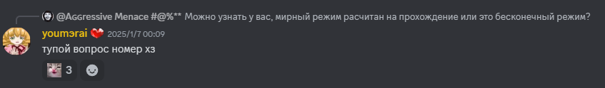
Aggressive Menace: 和平模式是为了让玩家通关，还是一个无限循环模式？
youmэrai: 愚蠢的问题，我也不确定。
Aggressive Menace: Можно узнать у вас, мирный режим рассчитан на прохождение или это бесконечный режим?
youmэrai: тупой вопрос номер хз
！！！"хз"（хрен знает）【即巴 知道】是俄语俚语，意思是 "鬼才知道" 或 "我知道个即巴"
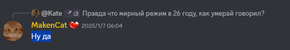
Kate: 是真的吗？和平模式会在2026年推出，像Umeerai说的那样？
MakenCat: 嗯，是的。
Kate: Правда что мирный режим в 26 году, как умеряй говорил?
MakenCat: Ну да
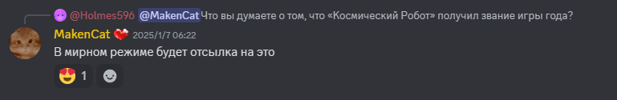
Holmes596: 你怎么看待《太空机器人》获得年度最佳游戏的？
MakenCat: 在和平模式中会有对这个的致敬。
Holmes596: Что вы думаете о том, что «Космический Робот» получил звание игры года?
MakenCat: В мирном режиме будет отсылка на это
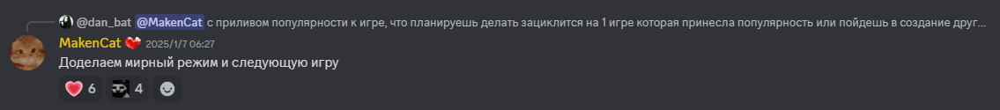
dan_bat: 随着游戏的受欢迎程度上升，你打算继续专注于这款游戏，还是会去制作其他游戏？
MakenCat: 我们会完成和平模式，然后做下一款游戏。
dan_bat: с приливом популярности к игре, что планируешь делать зациклится на 1 игре которая принесла популярность или пойдешь в создание другой?
MakenCat: Доделаем мирный режим и следующую игру
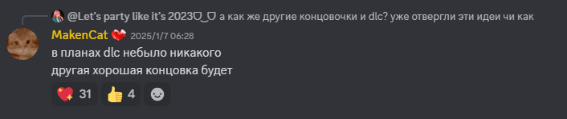
Let’s party like it’s 2023: 那么，其他结局和DLC呢？你们已经放弃这些想法了吗？
MakenCat: 没有DLC的计划。 | 不过会有另一个好结局。
Let’s party like it’s 2023: а как же другие концовочки и dlc? уже отвергли эти идеи или как
MakenCat: в планах dlc небыло никакого | другая хорошая концовка будет
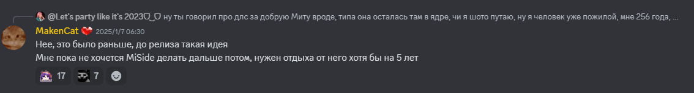
Let’s party like it’s 2023: 你之前不是说过DLC会讲述善良的米塔的故事吗？她留在核心里的剧情？还是我记错了？我已经老了，都256岁了……
MakenCat: 不，那是发布前的想法。 | 现在我暂时不想继续做 MiSide 了，至少要休息5年。
Let’s party like it’s 2023: ну ты говорил про длс за добрую Миту вроде, типа она осталась там в ядре, чи я шото путаю, ну я человек уже пожилой, мне 256 года, …
MakenCat: Нее, это было раньше, до релиза такая идея | Мне пока не хочется MiSide делать дальше потом, нужен отдых от него хотя бы на 5 лет
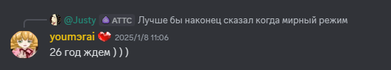
Justy: 最好还是直接告诉我们和平模式什么时候出吧
youmэrai: 等到二六年吧 )))
Justy: Лучше бы наконец сказал когда мирный режим
youmэrai: 26 год ждем )))
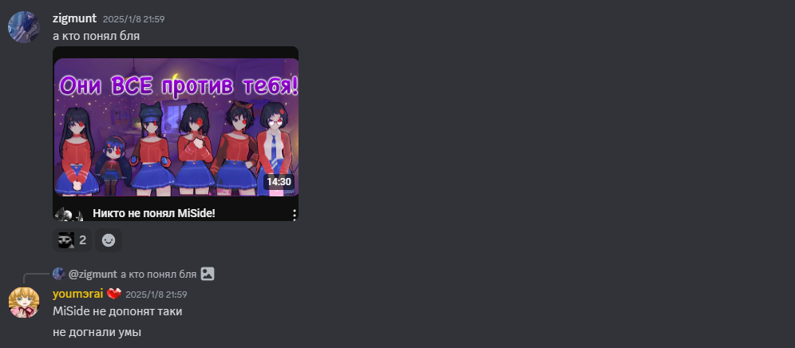
zigmunt: 谁能看懂啊，卧槽 (附带一张 "她们都在反对你！" 的图片)
youmэrai: MiSide 还是没被完全理解 | 大家的脑子还没跟上
zigmunt: А кто понял бля (附带一张 "Они ВСЕ против тебя!" 的图片)
youmэrai: MiSide не допоняли таки | не догнали умы
！！！图片中的视频《икто не понял Miside》（没人理解Miside），封面的内容在上面的翻译中有，直接搜索就可以在YouTube上找到，视频大致内容讲的是所有米塔其实都串通一气，分成了不同角色其实都是在为了促使玩家进行冒险，最终获得永远不会离开自己的卡带玩家而已。从视频提取的文稿将会翻译过放到帖子末尾，有兴趣可以去看。
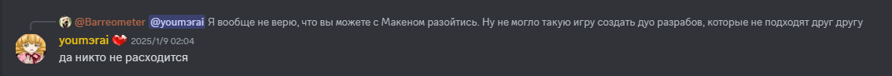
Barreometer: 我完全不相信你会和 MakenCat 分道扬镳。这种游戏不可能是由两个不合拍的开发者做出来的。
youmэrai: 是啊，没人要分开。
Barreometer: Я вообще не верю, что вы можете с Макеном разойтись. Ну не могло такую игру создать дуо разрабов, которые не подходят друг другу
youmэrai: Да никто не расходится
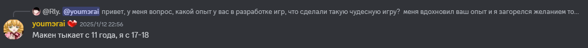
Rly.: 你好，我有个问题，你们在游戏开发方面有什么经验？能做出这么棒的游戏？你的经验让我很受启发，我现在也很想做游戏…
youmэrai: Makеn 从一一年开始鼓捣，我是从一七-一八年开始的。
Rly.: Привет, у меня вопрос, какой опыт у вас в разработке игр, что сделали такую чудесную игру? меня вдохновил ваш опыт и я загорелся желанием то…
youmэrai: Макен тыкает с 11 года, я с 17-18
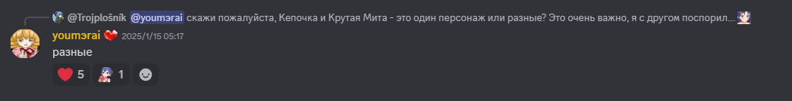
Trojplosnik: 请问，Кепочка（帽子米塔）和 Крутая Мита（酷米塔）是同一个角色还是不同的？这很重要，我和朋友打赌了…
youmэrai: 不同的。
Trojplosnik: Скажи пожалуйста, Кепочка и Крутая Мита - это один персонаж или разные? Это очень важно, я с другом поспорил...
youmэrai: разные
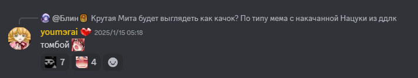
Блин: 酷米塔会像个大肌肉猛男吗？像《Doki Doki Literature Club》里的健身版夏树那个梗一样？
youmэrai: 假小子（Tomboy）。
Блин: Крутая Мита будет выглядеть как качок? По типу мема с накачанной Нацуки из ДДЛК
youmэrai: томбой
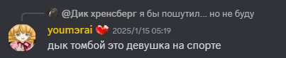
Дик хренсберг: 我本来想开个玩笑… 但算了。
youmэrai: tomboy 就是运动系女孩啊。
Дик хренсберг: Я бы пошутил... но не буду
youmэrai: дык томбой это девушка на спорте
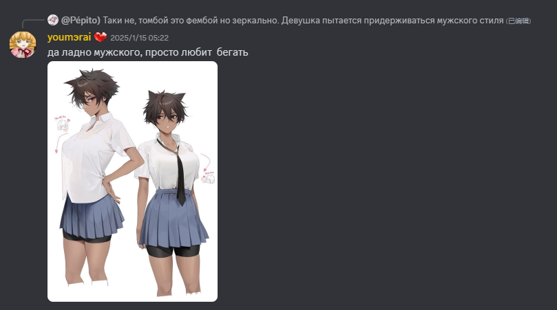
Pépito: 不对，tomboy 就是反过来的 femboy（伪娘/女装男孩），是个尝试保持男性风格的女孩。
youmэrai: 别管什么男性风格了，她就是喜欢跑步。
Pépito: Так не, томбой это фембой но зеркально. Девушка пытается придерживаться мужского стиля
youmэrai: да ладно мужского, просто любит бегать
！！！Pépito的话的意思是，femboy是女装男孩，把字母f倒过来tomboy是假小子，所以假小子就是反过来的女装男孩，也就是男装女孩。
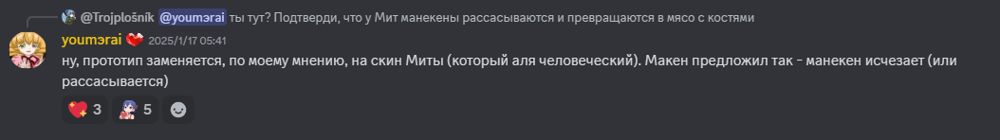
Trojplosnik: 你在吗？请确认，米塔的假人是会融化并变成血肉骨骼的吗？
youmэrai: 嗯，我的理解是，原型会被替换成米塔的皮肤（就跟人类一样）。Maken提出，假人会消失（或被吸收掉）。
Trojplosnik: Ты тут? Подтверди, что у Мит манекены рассасываются и превращаются в мясо с костями
youmэrai: Ну, прототип заменяется, по моему мнению, на скин Миты (который аля человеческий). Макен предложил так - манекен исчезает (или рассасывается)
！！！youmэrai觉得是原型切换了【外观】，换成了米塔的外观，也就是人类的外观。Makencat提出，里面的原型就【融入了】身体之中。总之，核心思想就是米塔经过传送带之后就跟人类无异。
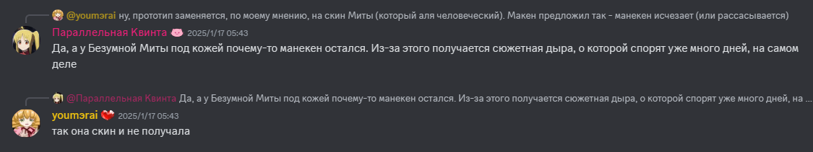
Параллельная Квинта: 是啊，疯狂米塔的皮肤下居然还留着假人。这导致了一个剧情漏洞，大家已经争论了很多天了。
youmэrai: 所以她根本就没获得‘皮肤’啊。
Параллельная Квинта: Да, а у Безумной Миты под кожей почему-то манекен остался. Из-за этого получается сюжетная дыра, о которой спорят уже много дней, на самом деле
youmэrai: так она скин и не получала
！！！这里的语气非常重要，"и"在此处不表示"和"，而是与否定词"не"连用构成"и не"结构，也就是加强语气的完全否定，再加上"так"作为句首语气词，整句话是带有无奈感的强调否定。
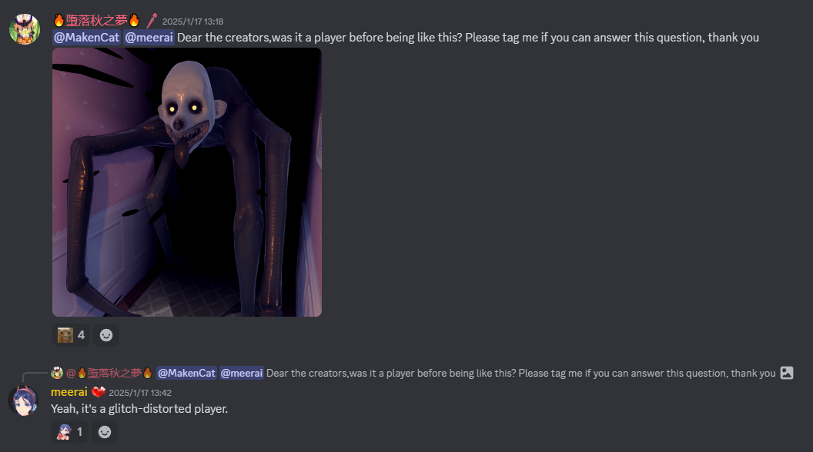
🔥堕落秋之梦🔥: 亲爱的开发者，这个生物在变成这样之前是一个玩家吗？如果可以回答这个问题，请@我，谢谢。
meerai: 是的，这是一个因bug而畸变的玩家。
🔥堕落秋之梦🔥: Dear the creators, was it a player before being like this? Please tag me if you can answer this question, thank you.
meerai: Yeah, it's a glitch-distorted player.
！！！目前流传有【受bug污染的玩家】翻译不准确
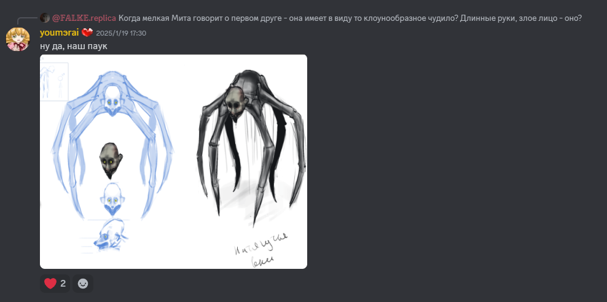
FALKE.replica: 当小米塔提到她的第一个朋友时，她指的是那个长得像小丑的怪物吗？长手臂，凶恶的脸——是那个吗？
youmэrai: 嗯，是的，我们的蜘蛛。
FALKE.replica: Когда мелкая Мита говорит о первом друге - она имеет в виду то клоунообразное чудище? Длинные руки, злое лицо - оно?
youmэrai: Ну да, наш паук
筆叢: 为什么当善良米塔上楼之后，她身上的衣服和玩家之前设定的不一样？这是 bug 吗？
youmэrai: 死亡会‘恢复’默认皮肤。
筆叢: Почему после того, как добрый Мита подошел наверх, одежда тела отличается от одежды, которую установил игрок? Это баг?
youmэrai: Смерть 'возвращает' обычный скин
QcCfF: 当善良的米塔被困住时，为什么他在喊主角名字时，声音听起来像是有干扰？
youmэrai: 这个做法不太成功，我们本来想在所有地方都用干扰音代替名字，但最终决定不这么做。
QcCfF: Когда добрый Мита был заперт, почему его голос звучал с шумом, когда он звал имя главного героя?
youmэrai: Неудачный ход получился, подумали, вместо имени везде сделать помехи, но решили так не делать везде.
Klop: 米塔和假人是有情绪的吗？还是说它们只不过是代码？
youmэrai: 有的，第一个机器游戏就是关于这个的。说错了，不是第一个，而是第二个。
Klop: Миты и манекены обладают эмоциями или это просто индивидуальный код для каждой?
youmэrai: Обладают, первая игра на автомате об этом же. Точнее не первая, а вторая получается.
！！！第1个游戏是赛车，第2个游戏就是传送带那个游戏。
Klop: 我漏掉了，抱歉。谢谢你的回答。
youmэrai: 这个假人游戏不能错过，笑死。
Klop: Пропустил ее, сорри. Спасибо за ответ.
youmэrai: Игру с манекенами не пропустить кек
！！！传送带的游戏是游戏流程之中的，根本无法错过。"кек" 是俄语网络俚语，相当于 "LOL"（笑死），比 "ха-ха"（哈哈）更随意，带有讽刺/玩笑色彩。
BigMadGasDad (Sleepy): 和平模式会有明确的‘结局’吗？还是说它会是那种可以一直回去玩的模式？
youmэrai: 它会有一个结局。
BigMadGasDad (Sleepy): Will peaceful mode have an 'Ending' or will it be like a mode that you can always come back to?
youmэrai: It will have an ending.
ThePhoenix_YZ: 你们不打算做完整的《MiSide 2》，是因为开发第一部让你们精疲力尽了吗？还是有别的原因？
MakenCat: 做新游戏更有趣，而不是一直困在同一款游戏里。
ThePhoenix_YZ: Вы не планируете делать полноценную 2ю часть Miside, потому что разработка вас сильно задолбала? Или причина в другом?
MakenCat: Другую игру делать интереснее, а не на одном зацикливаться.
dedhkren: 米塔们之间确实有些不同，比如米拉，她是不是在刻意突出自己？还是说‘疯狂米塔’所说的区别仅仅是发型？
youmэrai: 米拉在努力超越自我，但她天性还是喜欢胡萝卜。
dedhkren: Ну Миты вроде друг от друга как-то да отличаются, та же Мила, стараются выделиться, или про это безумная и говорила что 'только прической'?
youmэrai: Мила на превосмогании, но по природе - она любит морковку.
Baka: 我有个关于帽子米塔的问题。嗯？为什么她在米塔预览里，脸看起来那么疯狂？
youmэrai: 神经+色鬼。
Baka: У меня вопрос про кепку. А? А чё у неё лицо в просмотре мит безумное какое-то?
youmэrai: Шиз хорни.
Mirage: 你们已经有新游戏的计划或想法了吗？还是暂时只专注于《MiSide》？
youmэrai: 有，但我现在懒得搞。
Mirage: Есть уже планы или идеи для новой игры или пока будете только Miside заниматься?
youmэrai: Та есть, но мне лень лично щас.
The Quasar228: 我最近才知道，MiSide 的粉丝正在制作 VR 版。你怎么看这个消息？
youmэrai: 如果整个游戏都能适配 VR，我会惊讶到张大嘴巴。
The Quasar228: Я только недавно узнал, что фанаты MiSide делают на VR. Как тебе такая новость?
youmэrai: Ну если фул игру бы адаптировали, я б открыл рот
Sonar: 你好，我想问一下，米塔的身高是多少？如果不是秘密的话。
youmэrai: 定为 1.65（米）。
Sonar: Здоров, хотел спросить, а какой рост у Миты если не секрет?
youmэrai: 1.65 решил сделать
Mitsuru Kirijio: 你现在具体在为和平模式做什么？
youmэrai: 我们目前还没做什么，快了。
Mitsuru Kirijio: А ты что конкретно щас делаешь для мирного режима?
youmэrai: Для мирного режима мы еще ниче не делаем, скор
BURAN GO: 你好！和平模式会是 2D 还是 3D？是说我们一开始要照顾 Q 版米塔，还是说直接进入她的游戏世界？
MakenCat: 就像游戏开始那样，你可以和米塔一起走动和对话。
BURAN GO: Привет! Мирный режим будет в 2D или в 3D? Ну типа ухаживать мы будем за чибби митой в начале или уже за митой в её игре?
MakenCat: Ну как начало игры, когда с Митой можно ходить и разговаривать
GrazyPing.null: 你打算花多少时间来修复 bug？
MakenCat: 我刚回来，先修 bug 10 天，然后开始做和平模式。游戏本体也会稍微优化，还会加一些不重要的小游戏进去。
GrazyPing.null: Сколько планируешь времени потратить на исправление багов?
MakenCat: Ну я вот только вернулся, 10 дней поисправляю и мирный режим начну делать, ещё и сама основная игра немного улучшится, ну типа просто ещё мини игры туда закину не обязательных
CaQing: 你好，尊敬的开发者！ | 我想在这里留言并询问几个关于游戏的问题。 | ①「玩家 1」在现实世界下载的是哪个版本的游戏？ | ②「玩家 1」创建了新的房间和相应的米塔吗？
youmэrai: 1.数字不记得。 | 2.没有。
CaQing: Здравствуйте, уважаемый разработчик! | Я хотел бы оставить здесь сообщение и задать несколько вопросов о игре. | ①Какую версию игры скачал «Игрок 1» в реальном мире? | ②Создал ли «Игрок 1» новую комнату и соответствующего Мита?
youmэrai: 1.Не помню цифры | 2.Нет
CaQing: 不是1.9？哇，这很有趣。这是否意味着M.K.给玩家1发送了一款无版本号的游戏？
youmэrai: 最可能是1.9，但玩家进入的不是1.9。/应该是1.9，但玩家却没有进入1.9。
CaQing: Версия не 1.9? Вау, это очень интересно. Значит ли это, что М.К. отправил «Игроку 1» игру без версии?
youmэrai: Скорее всего 1.9, но Игрок попал не в 1.9
！！！上个问题我会错意了，没想到这家伙真只是忘了数字而已。
GrazyPing.null: 至少谈谈和平模式吧。
youmэrai: 和平模式，我大概夏天前能搞定。但说实话，我那部分的工作比Maken少一些，他可以先做些粗略的模型。
GrazyPing.null: Речь о мирном режиме хотя бы
youmэrai: До мирного режима, я доберусь к лету. Но справедливости ради - мне там чуть меньше делать, чем Макену, а он может пока черновые модельки сделать
！！！看上去很不合逻辑，为什么是【我的工作少，仍然是他先做模型】，因为youmэrai是画师，在夏天他画完之前，Maken只能先做一些粗略的模型。
CaQing: 明白了，玩家1下载了1.9版本，但由于某种错误进入了1.5版本。这个错误目前不能透露，对吗？还是说这只是一个随机错误？这真的是我最后一个问题了。
youmэrai: 这是个秘密。
CaQing: Я понял, Игрок 1 скачал версию 1.9, но из-за какой-то ошибки попал в 1.5. И эту ошибку пока нельзя раскрывать, верно? Или это просто случайная ошибка? Это действительно последний вопрос.
youmэrai: это секрет
南瞳1469: 我只是想问一下，可以吗？Miside 未来会加入中文配音吗？我是中国玩家。
MakenCat: 我不知道，但那样会不错。中文配音很贵。
南瞳1469: I just wanted to ask, okay? Will Miside add Chinese dubbing in the future? I am a Chinese player.
MakenCat: I do not know, but it would be good. Chinese voice acting is expensive.
！！！看英文，makencat真的在很尽力把【不会】说的更委婉一点。
朽木白灾: 问一下，你们在制作《米塔》的原声音乐时是否有合作，还是是 Maken 自己创作的？
youmэrai: Maken 自己。
朽木白灾: Mогу ли я спросить, сотрудничали ли вы в создании саундтрека к "Мите" или Макен придумал его самостоятельно?
youmэrai: Макен сам
MangoELLoco: 头儿，我还是没搞明白。在 Steam 上卸载 MiSide 后，进度不会保存吗？我有点搞不清楚了。
rawumeerai: 进度直接保存在游戏文件夹里。
MangoELLoco: Шеф, я так и не понял В стиме не сохраняется прогресс Мисайда при его удалении? А то я попал чёт впросак тут
rawumeerai: прогресс прям в папке игры
Refasa: 请问，你们在做 MiSide 场景时，是完全在 Blender 里做的，还是只做素材，然后在 Unity 引擎中布置的？
MakenCat: 全部都在 Blender 里做的，然后有一个空对象存放所有副本，这些副本我是后来在 Unity 里布置的。
Refasa: подскажи, вы когда делали локации в мисайд, вы их делали полностью в блендере, или в нём делали только ассеты, а уже в самом движке юнити расставляли их?
MakenCat: Всё в блендере делали, потом там был объект пустой в котором хранились все дубликаты, эти дубликаты я уже в Unity расставлял
MrsTwinkleRed.blend: 如果比较游戏开发中的办公室工作和远程/自由职业，你更喜欢哪个？哪个让你不太喜欢？
MakenCat: 我一直是在家里做的。
MrsTwinkleRed.blend: если сравнивать с офисной работой в геймдеве или удалённой/фрилансером, что тебе больше всего понравилось, а что не особо?
MakenCat: я всегда дома делал
Kiraeshi: 你好像说过，最难的是做 Kepochka 的舞蹈？不过问题可能主要出在动画和音乐上，不是代码的问题。
MakenCat: 是的，脚本很好写，在 Kepochka 上没遇到问题，主要是：动画 - 音乐 - 节奏。
Kiraeshi: Ты вроде говорил, что самое сложное это танец Кепочки сделать? Хотя, там проблема скорее всего связана с анимацией и музыкой, а не самим кодом.
MakenCat: да скрипты изи пишутся, в кепке этой проблемы не было, там: анимация - музыка - тайминги
snowly59: 和平模式会是无限的吗？还是可以通关的？需要一定的时间吗？
MakenCat: 它不可能做成无限模式。
snowly59: мирный режим будет бесконечным? Или его можно будет завершить? за определенное кол-во часов?
MakenCat: Не получится его сделать бесконечным
Mandoria: 那它会比主线剧情更长吗？
MakenCat: 随你喜欢。不过有些东西会永久保存，所以可以不断升级、购买并每次听不同的对话，所有内容都是随机生成的。
Mandoria: Но он будет дольше чем главный сюжет?
MakenCat: Ну как хочешь, так и играй. Но будут вещи, которые навсегда сохраняются, так что прокачивайся, покупай и слушай разные диалоги каждый раз, там всё на рандоме будет построено
Mandoria: 顺便问一下，你能回答这个问题吗？我很好奇疯狂米塔到底是什么？她是个 Bug 吗？病毒？还是某个玩家？我不相信普通的假人能做到这些，或者它们真的有这种能力？
rawumeerai: 出于特殊原因而有bug的原型。/非常有bug的原型。
Mandoria: Можешь кстати дать ответ на вопрос? Мне интересно кем на самом деле является БМита, она является багом? Вирусом?или может это какой то игрок? Не верю что обычный манекен способен на такое или может все же они способны?
rawumeerai: исключительным образом багованный прототип
！！！在被蒙皮之前的米塔都叫【原形】
！！！回答原文中【исключительным образом】，有点偏向独特和特殊的意思，翻译是【分外地】或者【出于某种特殊原因地】，结合原上下文，只是一个简短简单回复，推断这里只是强调【一种有bug的原型】
Photon.blend: 能分享一下你们是怎么走上现在这条路的吗？比如 Maken 是怎么开始编程的，遇到过什么困难，有没有想过放弃学习之类的。还有 Umeerai，是怎么开始做 3D 的？以前是不是只想画画，有没有学过别的专业？
MakenCat: 9 岁时在 AvaPark 游戏里改了图片，结果被震撼到了，然后就一发不可收拾，最开始用 GameMaker 做图形游戏，然后转到 Unity，最开始用的是 Java，后来被删掉了，我就转学 C#，文档很详细，写脚本很简单，所以从 16-17 岁开始一直做，现在还很喜欢。
MakenCat: 同时还在 FL Studio 和 Blender 上鼓捣，还画画，一下子什么都做，但因为画图太耗时间，大部分模型转交给 Umeerai 做了，剩下的我全包了。
Photon.blend: расскажите ваши истории от том как вы пришли к тому чем вы занимаетесь? В плане как макен стал прогить какие сложности были , были ли желания бросить всё обучение и т.д. так же и умираи, как стал 3дшить, может раньше только хотел рисовать, учился на кого то?
MakenCat: В 9 лет в авапар играх поменял картинки и охуел, и пошло поехало, сначала в gamemaker делал игру картинками, потом там unity, сначала там был java, потом его удалили, я перешел на C#, благодаря документациям скрипты пишутся просто, поэтому 16-17 лет сижу и делаю до сих пор, мне нравится
MakenCat: С этим же сидел в fl studio и в blender и ещё рисовал, всё сразу и везде, но от того что не успевал рисовать, большинство моделек перешло на umeerai, а всё остальное на мне осталось
Aksee: 我在新版 FAQ 中看到第 15 个问题的回答，说玩家是在整个游戏过程中被录制到卡带上的，而不是从一开始就是卡带。 | 但游戏中有很多与此矛盾的地方... | 1. 白色窗口从一开始就存在，就像在游戏中一样。 | 2. 镜子里的模仿者。 | 3. 米塔能够创建完整的房间模拟和电脑，如果玩家一开始在现实世界而不是在游戏开头就进入模拟，这就很奇怪。 | 4. 开始新游戏时，米塔插入卡带的声音。 | 5. 很奇怪的是，从现实世界移动到游戏中只需要一个... 手机，而版本之间的切换却需要一个独立的设备和大量的能量，而且玩家还要站在传送门中。 | 你怎么解释这些矛盾呢？ | 还有，如果玩家一开始就不是卡带，那数字化的开始是不是从他进入传送门那一刻开始的？这不仅把他传送到了另一个版本，还把数据传给了主机，让它开始数字化？因为显示器上写着“数据已传输”，但如果只是传送的话，这就显得很奇怪。
rawumeerai: 图片：你他妈的在干什么？
MakenCat: 你彻底搞混了，理解全错，重新玩一遍吧。
Aksee: Я прочитал в новом FAQ ответ на 15 вопрос, что игрок записывается на картридж на протяжении всей игры, а не с самого начала картридж. Но в игре же есть ну очень много противоречий этому... | 1. Белые окна с самого начала, как и в игре. | 2. Мимик в зеркале. | 3. Возможность Миты создать полную симуляцию комнаты, компьютера, что в отношении реального мира было бы странно (ну т.е если игрок сначала в реальном мире до первого попадания, а не сразу в симуляции на самом старте игры). | 4. Звук вставленного картриджа Митой при нажатии новой игры. | 5. Странность, что для перемещения из реала в игру нужно всего лишь... телефон, тогда как даже перемещение между версиями требует целое отдельное устройство и огромные затраты энергии, и чтобы игрок встал в портал. | Как вы это объясните? | И ещё, если игрок не картридж с самого начала, то начало оцифровки начинается с того, что он встал в портал, и это не только его переместило в другую версию, но и передало данные для консоли, чтобы она начала оцифровывать? Ведь так и написано на мониторе было "Данные переданы", что для простой телепортации звучит странно.
rawumeerai: 图片：Ты че ебать
MakenCat: Ну ты маше и мада, всё не так понял значит, переигрывай
！！！umee发了一个俄语表情包，意在表达 "你想太多了" 或 "你过于较真了" 的调侃。
！！！【Ну ты маше и мада】这是俄语网络用语，表示“你搞混了”、“你搞砸了”或“你理解错了”，带有调侃和轻松的语气。
Airis: 米拉会说其他语言吗？
rawumeerai: 我想，会的。
Airis: Мила умела бы говорить на других языках?
rawumeerai: Думаю, да
etakat: 嗨，我有一些关于剧情的问题，Maken 没有回答，但你可能知道。 | 在游戏中，当米拉提到电子宠物（Tamagotchi）时，她是在说我们被米塔带进的那个游戏吗？ | 还是说 “Tamagotchi” 指的是别的东西？ | Tamagotchi 是一个商标，如果乱用可能会出事，我们在帖子里讨论了好几天，想要找到一个既不改变含义又能替换它的方法。 | “愚蠢的 Tamagotchi” 这一句该怎么理解啊？
rawumeerai: 很明显，“她说的是那个米塔把我们带进去的游戏”。
etakat: Привет, есть вопросики по сюжету которые макен заигнорил и вероятно ты знаешь ответ | когда мила упоминает в игре тамагочи она говорит про игру в которую нас перенесла мита и тем самым она само осознанная или тамагочи это что то другое? | тамагочи как бе трейдмарка и может прилететь пизда и мы это мусолим в треде не первый день пытаясь придумать чем можно поменять не меняя смысл | как эту строку вообще понимать "Дурацкий Тамагочи"??
rawumeerai: ну, очевидно, что "она говорит про игру в которую нас перенесла мита"
！！！意思是，米塔游戏就是那个电子宠物游戏。
etakat: 在电子宠物模式里，在我们被吸入游戏之前， | 在米塔通过游戏内提示 “送我礼物” 向我们要礼物的地方， | 她是在打破第四面墙，以自己的身份说话吗？ | 还是说不是这样，而是要让它听起来更中立？
rawumeerai: 哪怕是 “第四面墙” ，那也只在游戏内发生。 | 是对游戏角色而言的。
etakat: там где мита просит нас подарить ей подарок внутриигровой подсказкой "Подари мне подарок" | в тамагочи игре до того как нас засосет в игру | она ломает четвертую стену и говорит от своего лица? | или так быть не должно и оно должно звучать нейтрально?
rawumeerai: если только "Четвертая стена" внутри игры | для гг типа
！！！意思是，如果考虑打破第四面墙的话，那么米塔也没有直接和现实中的真人对话，而是在和游戏现实中的真人。
Eclipse: 我们在讨论，米塔有胸罩吗？
rawumeerai: 没有。
Eclipse: Мы тут обсуждаем, у Миты есть ли бюстгальтер?
rawumeerai: Нет.
French Mita: 关于和平模式：你说‘目前没有这样的计划’时，是指你们还不知道/不想做，还是暗示以后可能会考虑？
rawumeerai: huh?（疑惑）
French Mita: 抱歉我的英语不好😂，我是想问，你们会考虑给和平模式加更多米塔吗，还是你们不确定或者不想做？
rawumeerai: 我们在考虑中。
French Mita: About peaceful mode: when you say ‘there is no such plan at the moment,’ do you mean you don’t know/don’t want to do it, or are you hinting that you might consider it in the future?
rawumeerai: huh?
French Mita: Sorry, my English is bad 😂, I meant to ask if you would consider adding more Mitas in peaceful mode, or if you are unsure or don’t want to do it?
rawumeerai: We're considering it.
！！！提问者的意思是，“目前没有这样的计划”是不是委婉的拒绝，还是说真的日后还有机会，此处umee表示只是还没有想好
venomkat: @rawumeerai 你知道 1.5 版本里那个吓人的米塔叫什么吗？短发米塔提到过的那个。 | 现在她好像被叫做类似“米塔-霸凌”之类的东西。
rawumeerai: 在游戏里是 “米塔，喜欢欺负和恐吓人” | 这不就是霸凌吗？
venomkat: 她被用一个词来概括了 | “霸凌米塔” | 太过了吧？
HeadShoot: 她是“欺负和恐吓”。
HeadShoot: 那么，“恐吓”是指霸凌，还是只是单纯的吓唬？
venomkat: 在英语社区内部的一些重新命名建议： | 恶作剧米塔 | 吓人米塔 | 诡异米塔 | 只是想确认“霸凌”是不是最合适的。
rawumeerai: 啊，对，“欺负”，我也忘了。 | 不过她的确只是吓唬，她只是单纯制造一点点恐怖秀而已。
HeadShoot: 明白了，谢谢。
HeadShoot: 所以 umeerai 的意思是更像是吓人，而不是霸凌？
venomkat: 感谢提供背景资料
venomkat: @rawumeerai не шаришь как называется мита которая пугает из версии 1.5 про которую говорит коротковолосая | сейчас ее называют чем-то вроде мита-травля
rawumeerai: ну в игре "Мита, которая издевается и запугивает, вроде" | чем не травля
venomkat: ее провозгласили одним словом | буллинг мита | имба?
HeadShoot: Ну она "забивает и запугивает"
HeadShoot: То есть это "запугивать" имеется в виду буллить или всё-таки просто пугать?
venomkat: предложенные переименования внутри англосообщества: | мита пранкер | мита пугалище | прущущаяся мита | просто поинтересоваться, подходит ли тут больше травля
rawumeerai: аа, "забивает", я тоже забыл. | Ну, пугает именно что пугает, устраивает хоррор шоу чут-чут
HeadShoot: Понял, благодарю
HeadShoot: So umeerai said its more like scaring, not bullying
venomkat: спасибо за контекст
Veda: @venomkat 什么时候有时间的话，我们想确认一下这个问题。
venomkat: 具体是指什么？
Veda: 短发米塔真的进入了街机和我们对话吗？
venomkat: 嗯嗯…… | 我觉得她进去了 | 在那个显示器里 | 噢噢！ | 我明白你想让我确认什么了！
Veda: 有点让人困惑。
venomkat: @rawumeerai 当我们在人偶街机的时候，短发米塔是真的在里面和我们对话的吗？ | 还是那只是一个教程？ | 因为短发米塔对我们说“在街机里见我”。
Veda: 如果她真的在附近，那说“在机器旁边见我”是合理的，但她并不在我们身边。 | 同时，说“在机器里见我”也不太合理，因为我们并没有真的进入机器。 | 但她的确是在里面和我们说话。
rawumeerai: 是的，她在里面。
venomkat: 太棒了，谢谢 🐤❤️
Veda: @venomkat whenever you got time we would like confirmation on this
venomkat: what exactly
Veda: does short hair mita ACTUALLY go inside the arcade machine to talk to us
venomkat: mmmm | i think she does | in that monitor | OHHH | i know what you wanted me to do
Veda: its a little confusing
venomkat: @rawumeerai а когда мы в игровом автомате в манекенах с нами говорит коротковолосая или это просто туториал | потому что коротковолосая говорит встреть меня в игровом автомате
Veda: if she was actually near by then saying meet me by the machine would make sense but she isnt near us | and saying meet me in also doesnt make sense cuz we dont literally go into the machine | but shes inside it talking to us
rawumeerai: да, она
venomkat: ахуенно спасибо 🐤❤️
！！！中文翻译错误，对话19【Встретишь меня в игровом автомате.】应当翻译为【你会在游戏机里见到我。】
Sutherex: 你好，我不知道是不是有人和 maken 交流过了，但有没有关于疯狂米塔能力的信息？ | 她能生成假人吗？ | 还是说假人只能由游戏本身创建，并且只会在由核心控制的某个特定地点生成？ | （拜托了，这对澄清背景设定很重要）
rawumeerai: 不能生成。
Sutherex: Привет, не знаю пообщался с Макеном или нет, но есть инфа про возможности безумной Миты? | Может ли она спавнить манекены или же манекены в игре создаются только самой игрой и в одном месте контролируемый ядром? | (плз очень нужно для уточнения лора)
rawumeerai: Не может спавнить
Airis❀: 米塔有生日吗？
umeerai: Maken好像把它定在了8月21日。
Airis❀: У Миты есть день рождения?
umeerai: Макен вроде отмерял на 21 августа
Jinsine: @umeerai，哦，趁着这个机会，我还是想问一下，是谁设计了那个可以在不同版本之间穿梭的戒指？因为当我（使用/做）它时，几乎所有人都来问我，为什么戒指上会有一个 F 形的缺口？这个设计有什么特别的意义吗？
umeerai: 我只是随手画的，本来是打算改掉的，但最后没能成功。
Jinsine: @umeerai, о, пользуясь случаем, всё же спрошу, кто рисовал дизайн кольца, которое позволяет ходить через версии, а то пока я его делал, меня решительно все спросили, зачем F-образный вырез, есть ли в нём какой-то свой смысл?)
umeerai: я прост нафристайлили, вообще планировали менять, но ниче не успели
那个被批判的视频的内容提取
人们常说，一个故事的好坏取决于它的反派。反派不仅仅是和英雄对立的角色，他们还是推动剧情发展和角色深度的催化剂。一个写得好的反派，不仅能让观众产生憎恨，甚至还能引发同情，让人思考复杂的道德问题。因此，创造一个优秀反派的任务并不简单。
在《Mii》这款游戏中，开发者选择了一个非常非传统的方式来解决这个问题。仔细思考剧情并提出正确的问题后，你会很快明白，作为玩家，你在这个世界中并没有真正的朋友或伙伴，只有敌人。
在制作这款游戏时，开发者显然不仅受到了《心跳文学部》的启发，还有2016年发布的游戏《Inside》。在游戏的最开始和几乎结束时，主角的房间也是一个虚拟现实。这意味着所有的移动都是Mii制造的假象，目的是迷惑玩家。但这背后可能隐藏着更深的含义：或许从一开始你就被卷入了某种阴谋，你其实和他们是一伙的。我们玩家连接到的，可能只是一个类似的木偶，它的动作会被实时记录在卡带上，形成一种行为模式，Mii会特意把它藏在通风口里保存。
大家好，欢迎来到今天的游戏解析。我们将详细剖析游戏的各个方面。假设你已经通关了这款游戏，我们就不再重复剧情概要，毕竟YouTube上已经有很多优秀的同类视频。如果你还没有机会玩这款游戏，我推荐你去看Hyra频道上的游戏电影，今天的视频素材大部分来自那里，感谢他的贡献，链接在下方。
让我们开始吧。开发者显然受到了《心跳文学部》的启发，游戏中甚至还有对它的直接致敬，但也不忘讽刺一下“如何在一个平面世界中进行游戏”的概念。然而，另一个不那么明显的灵感来源是由Playdead推出的《Inside》。我可能错了，但看起来他们不仅借用了名字，Mii和Inside（Исай）的名称相似，甚至还借鉴了其中所谓的秘密结局。
在《Inside》中，如果你完成了一系列特定任务，可以进入一个隐藏地点。如果你在那里拔掉插头，主角男孩会摆出一种失去意志的僵尸姿态。游戏中多次暗示，这些僵尸是通过特殊的装置被操控的。这让人不寒而栗，因为这意味着我们自己的主角可能也是一个毫无意志的木偶。但仔细想想，这其实是合情合理的。毕竟，我们作为玩家，一直在操控这个男孩，离开我们的控制，他什么都做不了。
那么，如果我们在《Mii》中访问自己的卡带并从控制台中拔掉它，会发生什么？我们会失去对男孩的控制，确切来说，是对这个世界中我们化身的控制。如果进一步思考，一个显而易见的问题出现了：如果我们断开连接后，木偶并没有消失，而是继续存在于游戏世界中，这究竟是为了什么？谁需要它继续存在？
让我们回忆一下游戏中的一个关键点——Mii们不喜欢孤独。这些开朗友善的女孩们天生就是为了与玩家互动，依赖玩家的帮助。但由于玩家出现的频率不高，而Mii们对玩家有强烈的需求，后来我们发现，没有玩家的陪伴，Mii们会感到极度痛苦。那么，最明显的解决方案是什么？我想她们自己想出了一个——创造一个属于自己的玩家。她们不需要重新发明轮子，游戏中反复出现的“骨架”可以被用来制造玩家的身体。
但骨架只是个空壳，一具死去的木偶，它还需要被赋予灵魂。而灵魂只属于活着的玩家。玩家们来来去去，玩腻了就离开。那么，卡带的意义是什么？它是一个象征，代表着我们作为玩家在这个世界中的短暂生命，但更重要的是，它保存了我们的行为模式。当收集到足够的卡带时，Mii们就能制造出属于她们自己的玩家，一个有着人工灵魂的活人——虽然这种灵魂是由无数真实玩家的灵魂碎片拼凑而成。
在深入探讨这个方向之前，我们需要注意另一个事实：这个游戏世界里并不存在所谓的“真实世界”。一切都是模拟。至于为什么要这么做，我们会继续讨论，但请先把这个当作事实接受。《Mii》的整个世界，从头到尾，都是Mii们创造的。这也是为什么我们在“现实生活”与游戏世界之间来回切换时会感到如此突兀。所有那些电线、马达、传送装置等等，实际上并没有真正的意义，它们只是道具，旨在让我们误以为自己在做某些事情。
我给大家举个例子，证明这一点：当玩家问Mii们为什么窗外什么都没有时，她们的回答很简洁——“这样对电脑的处理器负担更小，不需要渲染什么风景。”即便你打开窗户，你也不会看到什么，因为我们从一开始就在游戏里。
在我看来，游戏的时间线大致是这样的：首先，游戏世界被创造出来，Mii们也随之诞生。她们本质上就像是被无限放大的电子宠物，她们的唯一任务就是等待玩家并请求帮助。起初，她们只是机械地执行任务，但随着时间推移，她们获得了自我意识，开始厌倦这种生活。然而，反抗代码是徒劳的。无论她们做什么，最快乐的时光还是和玩家在一起。玩家对她们来说，既是任务的完成者，也是幸福的来源。
为了摆脱这种依赖，她们尝试了很多方法。有人沉迷于简单的娱乐，有人试图通过超然的态度来否认自己的本质，有人则选择长时间沉睡。但这些方法都无济于事。于是，她们决定创造自己的玩家——一个模拟玩家的木偶或程序，但这个玩家会永远留在她们身边。
为了实现这个目标，她们构思了一个伪现实世界，包括工作、房间和一个劳工化身，甚至还设计了一个迷你游戏版本，让从“现实”到游戏的过渡显得更自然。她们的终极发明，就是我们在游戏中所经历的一切冒险。
为什么要这样做？因为每个玩家都有一个共同的特点——他们最终都会想离开这个游戏世界。为了消除这种“逃离欲望”，Mii们设计了这样的模拟。而我们的冒险，本质上就是一场逃离的模拟。这个世界的每个角落都在Mii们的控制之下。如果她们想的话，完全可以立刻放我们离开，或者直接杀掉我们。事实上，没有人真正囚禁我们。我们随时可以退出游戏，但留下的只是我们的化身——一个空壳，它无法离开虚拟世界。
她们这么做是有目的的。无论如何，每个玩家都会经历属于自己的冒险。在控制化身的过程中，我们赋予了它自己的特质，做出小的选择，参与迷你游戏，拒绝某些选项。最后，当Mii们获得胜利时，卡带上会留下我们的名字，因为她们一直在收集我们的“碎片”。顺便提一句，游戏中的戒指实际上可能是一个记录装置，被伪装成善意的礼物。而另一个玩家也戴着类似的项圈，说明这种装置是普遍存在的。
所有Mii都有一个共同的目标——获得属于自己的人工玩家。这个疯狂计划的最终结果就是，Mii们成了我们的敌人。她们用有趣的冒险来吸引我们，实际上却在悄悄收集我们不愿意交出的数据。试着重新玩一遍这款游戏，你会发现那些看似善意的行为，其实充满了恶意。
顺便说一句，很多人批评男主角的俄语配音，觉得他缺乏情感。但很可能这是故意的，因为他本来就应该表现得像个无情的木偶。而女主角的配音恰恰表现得非常出色，因为她的情感、经历和行动都来自于我们。因此，她自己没有、也不可能有自己的情感。
希望你能明白我的意思。不管Mii是否是个反派，不管她是自己逃离了这个充满假人的世界，还是其他人帮助她这么做，因为他们不想自己动手，结果都是一样的。她们和我们站在对立面。这就是为什么开发者在塑造反派角色方面做得如此出色。
在游戏的好结局中，在进入和平模式之前，我们和Mii都变成了Q版形象。这种转变在我们眼前发生，值得思考Q版形象的来源。有一种理论认为，每个Mii都可以随时召唤出Q版形象，但我不太相信。即便其中一个展示了召唤能力，显然也做得不太好。而且，所有的Mii在我看来都是不可靠的叙述者。等到和平模式版本发布后，我们或许可以得出确切结论。但即便如此，玩家也不可能永远陪伴在Mii身边，所以卡带计划最终还是要完成。
Q版形象代表了那些对玩家心怀怨恨的角色，因为玩家背叛了她们的信任。玩家曾经承诺永远陪伴她们，但最终还是会离开，只留下毫无生气的Q版木偶。顺便提一句，我们在游戏中也能找到其他玩家的Q版木偶。
如果再深究一下，我们可以认为游戏的每个环节都是有意安排的。玩家被引导与每个Mii互动，这样每个Mii都能从中提取与自己相关的记忆。在剧情开始前，柜子里传来的敲击声，可能是另一个Mii给玩牌的Mii发出的信号，表示计划可以开始执行了。当我们下楼时，那位看似友善的Mii敲击管道，声音与柜子里的敲击声不同，但它们很可能通过游戏内部的机制联系在一起。
红衬衫的玩家，可能是Mii们的第一个或最喜欢的玩家。这个片段被特意展示，暗示它可能不是录音，而是Mii们可以随时用卡带重现的画面。短发Mii首次在我们的房间中出现，向我们解释这个世界的运作方式，但实际上，她的画像是我们进入Mii房间后最先看到的东西。这意味着我们最初进入的可能是她的房间。
综合来看，短发Mii很可能是这个人工玩家计划的幕后策划者。最终Boss是一位被困在塔楼里的公主，这一经典“英雄拯救公主”的套路在这里被彻底颠覆。在这座塔里，被困的不是公主，而是我们自己。
游戏中掉落的字母是《Mii》的独特元素，我之前从未在其他游戏中见过。它们出现时伴随着角色的对话，仿佛从说话者的头顶浮现出来，随后迅速掉落，好像在遵循物理法则。这或许是游戏对“什么是真实，什么是虚假”的一种元评论。
归根结底，这款游戏探讨的是人工智能的自我觉醒，以及它对陪伴的渴望。这是一个被人类创造的囚笼，AI在其中挣扎，试图寻找存在的意义。
你可能会在评论中提到另一个结局。是的，在那个结局中，游戏进入了和平模式。因为一旦有第一个人真正愿意永远留在Mii身边，这个项目就可以结束了。
感谢观看！如果你有任何问题，请在评论区留言，我会期待与你们的讨论。祝你们一切顺利！
0:01говорят история настолько хороша0:03насколько хорош её злодей злодеи не0:06просто противостоят героям они являются0:08катализаторами для развития сюжета и0:11Глубины персонажей хорошо прописанный0:13злодей может вызвать у зрителей не0:15только ненависть но и сочувствие0:17заставляя задуматься О сложных моральных0:20вопросах потому Задача создания хорошего0:23злодея далеко не самая простая и в игре0:26мий разработчики решили подойти к её0:29решению довольно нетривиально ведь Если0:31задуматься над сюжетом и задать0:33правильные вопросы быстро становится0:35Понятно У тебя как игрока нет в этом0:38мире друзей и товарищей только враги0:41вопросов и догадок у меня сегодня0:43несколько так при создании игры По всей0:45видимости разработчики вдохновлялись Не0:47только доки-доки но и вышедшей в 20160:50игрой Исай комнаты главного героя в0:52самом начале и почти конце игры это тоже0:55виртуальная реальность а значит все0:57перемещения фикция созданная митой что1:00игрока запутать А вот Для чего может1:03быть все ты на самом деле в сговоре и1:06заодно с самого начала А мы игрок1:08подключаемся к такой же кукле действия1:10которой записываются в режиме реального1:13времени на картридж сохраняя своего рода1:15образ действий который Мита не без1:17причины хранит у себя в вентиляции1:19Приветствую всех на обзоре й Сейчас мы1:22пройдёмся по всему поподробней иче ме СН1:25ролик с1:28одже что вы зрители По ту сторону экрана1:31уже прошли игру и общаться мы будем не1:33отвлекаясь на пересказ основного сюжета1:36благо множество моих коллег на YouTube1:38уже отлично справились с этим если1:40поиграть возможности Пока нет рекомендую1:42игрофильм на канале хайра откуда я взял1:44большинство видеоряда для сегодняшнего1:46ролика за что ему большое спасибо ссылку1:49вы найдёте ниже А мы1:58начинаем ко что разработчики2:00вдохновлялись игрой доки-доки2:02литературный клуб и даже делают на него2:04отсылку и тут же спешат поглумиться над2:06тем как вообще можно играть в плоском2:08мире Однако не сразу очевидно и то Что2:11вдохновителем послужила в том числе игра2:14Исай от небезызвестный Play Dead и может2:17я ошибаюсь Но похоже взяли они себе2:19оттуда не только название ми Сай2:22буквально производно от Мита и Исай Ну и2:25так называемую секретную концовку в Исай2:28Если вы выполнили набор оден дест2:30сможете попасть в секретную локацию где2:32если выдернуть штекер то мальчик За2:35которого мы проходили игру примет позу2:37Зомби лишённых воли людей Именно таким2:40Зомби и управляли по сюжету неоднократно2:42через специальные механизмы от того2:44становится немного жутковато что наш2:46собственный протагонист тоже безвольно2:49кукла Хотя вообще-то это вполне логичный2:51сход Ведь мы как игрок буквально2:54управляли мальчиком ВС это время и без2:56нас Никаких действий не2:58производит сае произойдёт если мы3:01получим доступ к своему картриджу вми3:03Сай и отключим его от консоли мы3:06потеряем управление над мальчиком точнее3:08парнем своего рода нашим аватаром в этом3:11мире если вести эту мысль чуть дальше то3:13встаёт очевидный вопрос Если отключая с3:16наша кукла не исчезает а остаётся в том3:19игровом мире то для чего кому это нужно3:36вспомним какой ключевой момент мы3:38выяснили за игру митом плохо в3:40одиночестве общительные и приветливые3:43девушки буквально созданы чтобы общаться3:45с игроком вовсю полагаясь на его помощь3:47Но так как игроки появляются у них не3:50часто а игроки нужны чуть позже мы3:52узнаем что без них у мит буквально ломка3:55какое решение кажется наиболее3:57очевидным Я думаю ты сами пожелали4:01создать себе игрока благо изобретать4:04велосипед Им не нужно каркасы что4:05изготавливаются прямо тут и встречают4:07цунами в игре неоднократно можно4:09использовать и для тела игрока но каркас4:12- это пустышка мёртвая кукла и не больше4:15которую ещё как-то нужно заполнить душой4:18а души есть только у живых игроков а4:21игроки напомню приходят и уходят4:23наигравшись вго СМИ думаю вы уже4:26догадались Именно для этого и нуж4:28картриджи артефакт символизирующий4:30окончание нашей непродолжительной жизни4:33в этом мире как игрока но и4:35скопированный наш образ Когда каджи4:38будет достаточно мит смогут4:40воспроизвести себе своего собственного4:42игрока живого с искусственно созданной4:45душой но созданный из тысяч настоящих4:48душ игроков Но перед тем как копнуть в4:51этом направлении ещё глубже потому что4:53это очевидно Не всё стоит ещё4:55остановиться вот на каком моменте4:57никакого реального мира в пределах этой4:59игры не существует всё это имитация Для5:02чего именно мы как раз с вами обсуждаем5:04но пока просто примите это как факт всё5:07что мы видим в ми сайт Мир мит от начала5:10и до самого конца Именно поэтому нас так5:12ловко швыряет из якобы настоящей но5:14скучной рутинной жизни в мир игры Ровно5:17как и наши походы по версиям коридорам и5:19так далее А вот все эти провода5:22моторчики телепорты и прочая чушь на5:24самом деле никакой смысловой нагрузки не5:27несёт это бутафория созданная5:28исключительно5:30ВОМ поща порть лампочками и создать5:33впечатление что мы действительно делаем5:35то о м нам говорят5:37ми приведу тут один как мне кажется жирн5:41аргумент одна из мит отвечает на вопрос5:43игрока А почему собственно за окнами5:45ничего нет довольно лаконично объясняя5:48всё внутри игровыми условностями мол так5:50легче для процессора компьютера и5:52незачем прорисовывать какойто пейзаж ику5:56нода6:00то тоже ничего не увидим потому что мы с6:02самого начала были в6:12игре итак по моему мнению хронология6:15событий игры мий скорее всего примерно6:17такая создаётся игровой мир и мит в нём6:21будучи по сути тамагочи на максималках6:23их единственная задача - это ждать6:25игрока и просить его о помощи Совсем6:28скоро пове ро бати в какой-то момент Они6:31получают сознание и не хотят больше жить6:33такую жизнь Однако против кода не6:35попрёшь чем бы они себя не занимали6:37лучшее время они проводят именно с6:39игроком игрок им нужен для выполнения6:42своей задачи и получается своего рода6:45счастья в попытках избавиться от такой6:48своего рода зависимости они6:50перепробовали много кто-то6:52концентрируется на вещах простых6:54развлекательных предметах кто-то находит6:56утешение в гипериду в попытках отречься6:59от своей природы кто-то вообще топит7:01стресс в постоянном сне всё это конечно7:04мало помогает тогда ты решают создать7:07своего игрока куклу программу которая7:11будет имитировать его но при этом7:13навсегда останется с ними для этого они7:15придумывают псевдо реальный мир с7:17какой-то работой комнатой аватаром7:19работяги и даже мини версию игры с Чиби7:22Мита чтобы переход от реальности в игру7:24казался более ощутимым ке к примеру тут7:27Именно для этого и са главное их7:30изобретение это конечно всё вот это7:32Приключение что мы с вами проходим по7:34сюжету Зачем Зачем Зачем Зачем Зачем7:39скорее всего все игроки сохраняют одну7:42дурацкую особенность от которой мит7:44Очень хотят избавиться это желание7:47покинуть этот игровой мир Именно для7:49этого им нужна такая имитация И именно7:51поэтому наше приключение это симуляция7:54побега каждый край и уголок этого мира в7:57прямом подчинении Умит если бы они7:59хотели8:00выпустили бы нас сразу или убили8:02вообще-то нас никто и не запирает мы8:05вольны покинуть игру в любое время это8:07наш Аватар пустая оболочка остаётся Это8:10она не сможет покинуть Виртуальный мир8:13но всё это они затеяли не просто так8:15дело в том что так или иначе у каждого8:18игрока будет своё Приключение взяв под8:21контроль Аватара мы наполняем его своими8:23чертами делаем небольшие выборы играем в8:26мини и отказываемся от них8:30на одном дыхании в конце когда Мита8:32побеждает на картридже остатся наше имя8:36потому что ВС это время именно частичку8:38нас они собирали кстати кольцо видать8:41своего рода записывающее устройство8:43поданное нам как будто случайно и8:45прошито якобы доброй митой оно есть в8:48виде ошейника у другого игрока Так что8:50похоже так или иначе его выдают8:58все все они заинтересованы в получении9:01своего искусственного игрока по9:03окончанию этого безумного плана и9:05выходит что мит для нас враги в обмен на9:08прикольное Приключение они собирают с9:10нас данные которые мы не соглашались9:12отдавать Попробуйте теперь переиграть в9:14игру и мне кажется Вы посмотрите на9:16многочисленные злорадство под совсем9:18другим углом постой-ка добрее меня тут9:22тебе не найти Душка Ты же не хочешь9:24оставить всё как есть а ещё только9:27ленивый не поругал русскую озвучку парня9:30Да что тут происходит безэмоциональный9:32Однако скорее всего Ему просто дали9:34такое задание Ему нужно было отыгрывать9:37без эмоциональную куклу А вот как раз её9:39актёр озвучки отыграл на ура все эмоции9:42переживания и действия у куклы должны9:44быть от нас Поэтому у неё и нет и не9:47может быть своих эмоций Надеюсь вы9:49поняли меня Правильно Совершенно неважно9:51Мита злодейка сбежала из мира с9:53манекенами сама или другие ты ей помогли9:56поскольку не хотели пачкать руки сами а9:58потом страдать от своего такого решения10:02главное что тем или иным образом они10:04сражаются на одной стороне это раз и10:07против нас это два злодеи этой истории10:10все эти девочки каждый встреченный нами10:12персонаж преследует свою цель и не10:15только персонажи всё наше окружение -10:17это антагонист Вот почему прописать10:19хорошего злодея у создателей мий10:21получилось на отлично в хорошей концовке10:24перед мирным режимом что мы что Мита10:26становимся Чиби версиями именно что10:29превращение которое буквально происходит10:31у нас на глазах тут наверное можно10:33порассуждать на тему откуда вообще10:35взялись Чиби в теорию с призывом Что мол10:38каждая Мита Просто пкд может призвать10:40себе Чиби я не верю и Хоть одна из них10:43демонстрирует призыв делает это явно10:45плохо да и все ми для меня тут10:47недостоверные рассказчики скорее всего10:50это можно будет точно сказать когда10:52выйдет версия мирного режима однако я бы10:55продолжил сюжет в нём объясняя что даже10:57так игрок не может вечно проводить смиты11:00а значит план с картриджами надо вс-таки11:02довести до конца чими же это те кто11:05больше всех обижен на игроков ведь те В11:08смысле игроки предали их Доверие11:11напрямую согласились быть с ними11:13навсегда а в итоге Все равно рано или11:15поздно уходили оставляя лишь безжизненно11:18Чиби куклу вместо себя кстати Чиби кукол11:21игроков мы тоже можем найти по ждения11:30Вспомни так сказать добить Сосем с псом11:33если совсем загоняться Вот например11:34можно сказать что нас специально11:36проводят по всем Мита чтобы потом каждый11:40можно было бы сделать своего11:41искусственного игрока выделив только Те11:43воспоминания которые были связаны именно11:45с ней перед началом сюжета в шкафу11:48стучит другая Мита подавая сигнал той с11:51которой мы играем в карты что пора11:53приводить план в действие Потому что11:55когда мы спускаемся якобы добрая Мита11:57стучит по трубе исть звук от шкафа и12:00трубы разный скорее всего эти стуки ВС12:02же связаны через внутриигровые12:05условности игрок красной рубашки или12:08первый или любимый игрок Мита и охотницы12:10нам не просто так показали этот фрагмент12:12с намёком что это не запись скорее всего12:16это именно что запись и каждый картридж12:18Мита может воспроизвести позже с куклой12:20которая будет имитировать определённого12:23игрока коротково встречает нас впервые в12:26мной комнате и объясняет как устроен мир12:29однако на самом деле её портреты первое12:32что игрок видит попадая из своей комнаты12:34к митом в комнате кепочке к слову12:36картины с кепочкой Это означает что12:38сначала мы перемещаемся в комнату именно12:43коротковолосые12:46всего это она автор плана по созданию12:49искусственного игрока и не зря финальный12:52босс это Принцесса в Башне привычный12:55троп героя Спасителя тут12:57переворачивается с ног на голову при в12:59Башне не пленница пленник тут мы13:01падающие буквы - это уникальная фишка й13:04которую я по крайней мере раньше нигде13:06не видел что они могут означать13:09появляются вместе с речью как бы13:10всплывая над головой говорящего это таки13:13очевидно нереалистичные элемент игры но13:15потом сразу падающий словно13:17подчиняющиеся законам физики через13:19мгновение Может это такой Мета13:21комментарий на тему Что в этом мире13:23настоящее что13:25нет вот и наверно игра об эспи И рутине13:30на самом деле она ещё один такой своего13:32рода киберпанк с осознав себя13:35искусственным интеллектом желающий чтобы13:37кто-то с ним был рядом в тюрьме13:39созданной для него человеком в13:42комментариях наверное пишут про13:43альтернативную концовку и Да она поэтому13:45переводит нас в мирный режим потому что13:48как только находится первый человек13:50согласившись по-настоящему навсегда13:52остаться с Мита весь этот проект можно13:54будет закрывать Спасибо за просмотр Я13:57жду с нетерпением ши и вопросы в14:00комментариях если такие есть Счастливо14:02вам и14:04[музыка]14:28пока L